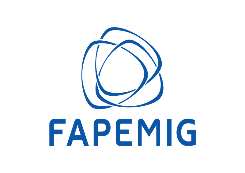

Research Projects
Current

Safety Analysis of Power Systems with High Renewable Energy Penetration: Computational Methods and Applications to Distribution Systems and Microgrids (2027–2029)
This research project investigates computational methods based on Security Regions (SRs) to assess operational limits and safety margins in power systems with high renewable energy penetration. The project focuses on distribution networks and microgrids, considering distributed generation, energy storage systems, and emerging technologies such as hydrogen production. Power flow-based methodologies and machine learning techniques, including deep learning, will be explored to efficiently construct and approximate security regions, supporting power system planning, operation, and hosting capacity assessment. The project is funded by the Minas Gerais State Research Foundation (FAPEMIG), under the Universal Research Grant Program (APQ-03043-26). I am the principal investigator and project coordinator.
Previous
INERGE: Development of Deterministic and Probabilistic Methodologies for AC Microgrid Analysis (2023–2025)
This research project investigated deterministic and probabilistic methodologies for the analysis of balanced and unbalanced AC microgrids operating in grid-connected and islanded modes. The project focused on developing computational tools for Power Flow, Optimal Power Flow, Security Regions, and State Estimation to support microgrid planning, operation, and security assessment. The research was conducted within the National Institute of Science and Technology in Electric Energy (INERGE), a collaborative research network involving INESC TEC, UFABC, UFF, UFJF, UFRJ, UFSJ, and UNIFEI. My research activities focused on power system control and stability, islanded microgrid operation and planning, and computational methods for security assessment.
Optimal and Robust Design of Electromechanical Oscillation Damping Controllers in Power Systems with Renewable Energy Sources (2019–2023)
This research project investigated the optimal and robust placement and coordinated design of Multi-Band Power System Stabilizers (MB-PSS/PSS4B) to enhance small-signal stability and maximize power transfer from wind generation areas. The project focused on the allocation and tuning of damping controllers in synchronous generators and Flexible AC Transmission Systems (FACTS), particularly Static Var Compensators (SVCs) and Static Synchronous Compensators (STATCOMs). Optimization-based methodologies were employed to improve electromechanical oscillation damping across multiple frequency ranges. The project was funded by the Minas Gerais State Research Foundation (FAPEMIG), under the Universal Research Grant Program (APQ-02245-18).